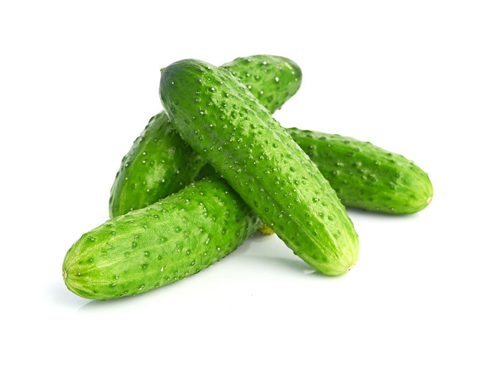
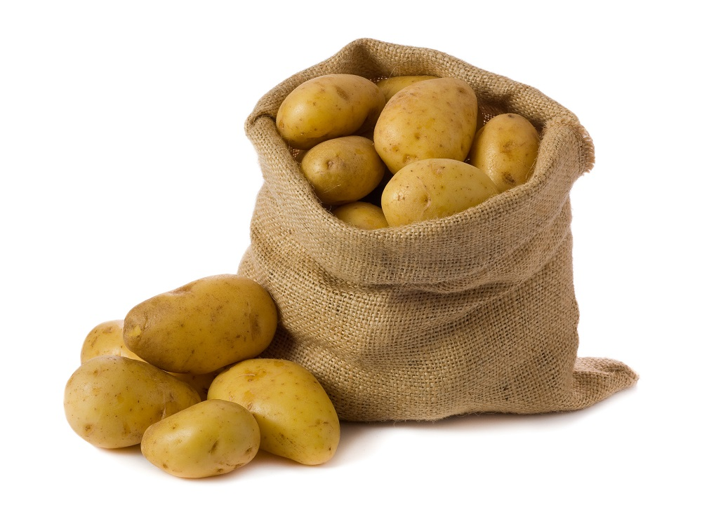
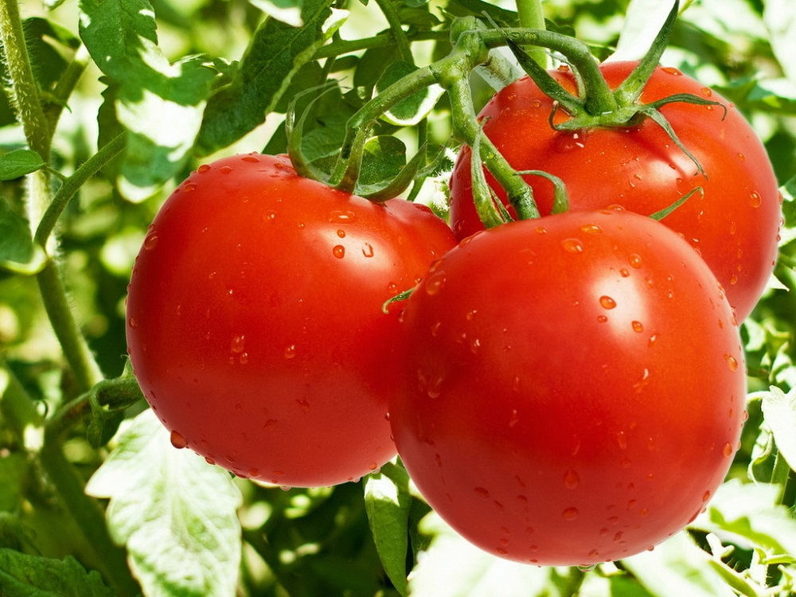
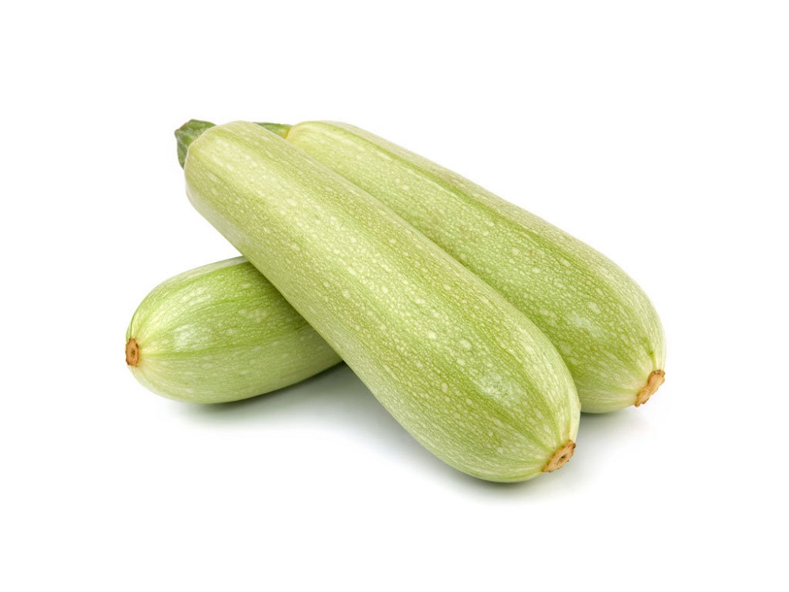

Плод яблони, который употребляется в пищу в свежем виде,
служит сырьём в кулинарии и для приготовления напитков.
Считается, что родиной яблони является Центральная Азия.
Наибольшее распространение получила яблоня домашняя.
На сегодняшний день существует множество сортов этого вида
яблони, произрастающих в различных климатических условиях.
Двулетнее растение, сельскохозяйственная культура; вид
рода Капуста (лат. Brassica) семейства Капустные
(Крестоцветные).
Двулетнее растение (редко одно- или многолетнее), в
первый год жизни образует розетку листьев и корнеплод,
во второй год жизни — семенной куст и семена.
В сельском хозяйстве выращивается морковь посевная (морковь
культурная, рассматривается или как самостоятельный вид
Daucus sativus, или как подвид моркови дикой — Daucus carota
subsp. sativus) — двулетнее растение с грубым деревянистым
беловатым или оранжевым корнем. Культурная морковь
подразделяется на столовую и кормовую.

Однолетнее травянистое растение, вид рода Огурец (Cucumis)
семейства Тыквенные (Cucurbitaceae), овощная культура.
Вид многолетних травянистых растений рода Паслён
(Solanum). Возделывается как однолетнее растение.
Съедобен только плод. В ботаническом смысле это ягода,
в кулинарном рассматривается как овощ. Известен также под
названием бадриджа́н (редко бубриджа́н), а в южных районах
России и на Украине баклажаны называют си́ненькими
(ед. ч. си́ненький).

Вид многолетних клубненосных травянистых растений из
рода Паслён (Solanum) семейства Паслёновые (Solanaceae).
Клубни картофеля являются важным пищевым продуктом. Плоды
ядовиты, в связи с содержанием в них соланина.
Род травянистых растений семейства Тыквенные
(Cucurbitaceae).
Под словом «тыква» в России обычно понимается вид
Тыква обыкновенная (Cucurbita pepo), широко
распространённый и культивируемый как пищевое и
кормовое растение.
Русское слово «тыква», по версии Иллич-Свитыча,
происходит от праславянского *tyky из *tykati - "жиреть".

Однолетнее или многолетнее травянистое растение, вид
рода Паслён (Solanum) семейства Паслёновые
(Solanaceae). Возделывается как овощная культура.

Кустовая разновидность тыквы обыкновенной с продолговатыми
плодами, без плетей[3]. Плоды могут быть зелёного, жёлтого,
чёрного или белого цвета. Мякоть нежная и быстроваркая,
употребляется также и в сыром виде (в салатах).